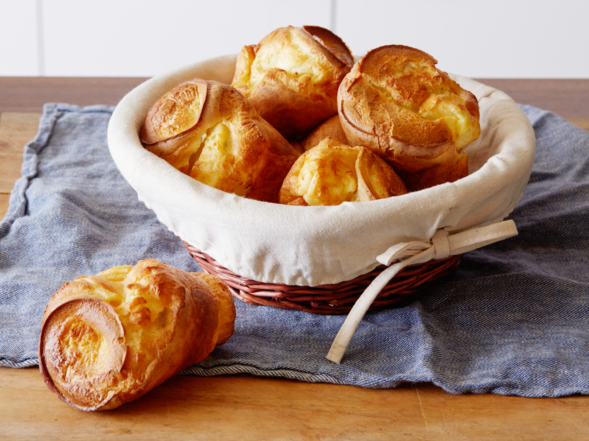

Papa’s Pop Overs
 3
servings
3
servings 45
minutes
45
minutes-
 Bee
Plant
Bee
Plant
 Vegetarian
Vegetarian
Kevin’s favorite breakfast.

3eggs, beaten1 ½ cupmilk1 ½ cupsifted flour½ tspsalt
Ingredients
Grease the muffin pans.
3eggs, beaten1 ½ cupmilk1 ½ cupsifted flour½ tspsalt
In a bowl, mix eggs, milk, flower, and salt. Lightly beat the ingredients together.
Fill cupcake tins almost ¾ full.
Start with oven cold, set oven to
425-450 °Fand bake for30 minutes.